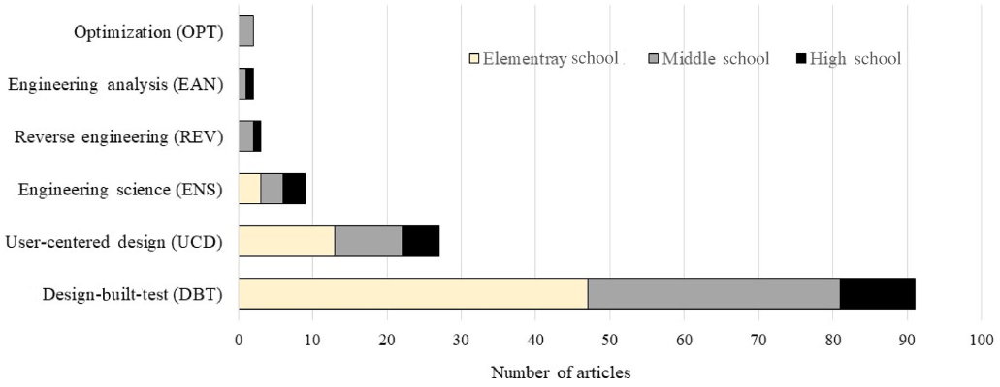

R code
# packages
library("data.table")
library("ggplot2")
library("cowplot")A chart best serves its rhetorical purpose by directly illustrating the variables of interest discussed in the text.
Richard Layton
2022-02-03
I redesign a stacked-bar chart to attempt to better align the logic of the display with the logic of the argument. The visual structure of the redesigned chart suggests a concomitant reorganization of the prose, illustrating the interplay between visual and verbal rhetoric.
In a 2021 article, the authors summarize 134 engineering-curricula articles for teachers of pre-college students. The authors classify the articles by grade level and the type of engineering inquiry (Purzer, Quintana-Cifuentes, and Menekse 2021).
In section 7, the authors include a data table of numbers of articles by grade level and inquiry type. A stacked-bar chart represents the numbers in the table. In supporting their argument, however, the authors cite ratios of these values—ratios that might be inferred, but are not directly displayed, in the chart provided.
I take the text to represent the authors’ intended message and look for ways to more effectively represent that message visually.
My intention is not to critique the article as a whole, which develops a “honeycomb of engineering” research framework for examining how engineering concepts and practices are taught at pre-college levels. I focus instead on the interplay between data, argument, and charts in one section only.
Throughout the post, you can click on the “R code” pointer to see the script used to create the graphs. This first code chunk loads the R packages used.
In the original Table 2, the authors classify 134 articles by grade level and the type of engineering inquiry. These are the raw numbers they cite in their discussion. The parenthetical titles in the column heading are the journals in which the articles appear.
Because the structure of a data set is an important factor in designing a chart, I classify the variables in Table 1. The multiway dot chart was designed specifically for data of this type: one quantitative variable depending on two independent categorical variables (Cleveland 1993, 302).
| variable | structure |
|---|---|
| number of published articles | quantitative |
| type of engineering inquiry | categorical, nominal, 6 levels |
| grade level | categorical, ordinal, 3 levels |
The data are available in the blog data directory as a CSV file.
# read prepared data
dt <- fread("data/honeycomb-2021.csv")
# order the levels of grade level
dt <- dt[, grade_level := factor(grade_level, levels = c("Elementary School", "Middle School", "High School"))]
# compute percentage of articles by grade level
dt[, pct_level := round(N / N_level * 100, 0)]
# obtain the total N of articles
article_total <- sum(dt$N)The original Figure 3 is a conventional stacked-bar representation of the numbers in Table 2. The authors improve on the usual default software settings by ordering the rows of the chart from top to bottom by increasing totals.

The perceptual limitations of stacked-bar charts are well-known: visual comparisons are effective for quantities having a common baseline and are ineffective otherwise.
Stacked bars work well when you want to compare totals across different categories, and then within a given category, you want some understanding of the subcomponent pieces. Notice though, that they work less well if you want to compare those subcomponent pieces across categories. This is because as soon as you get past the first series, you no longer have a consistent baseline to use to compare. This is a harder comparison for our eyes to make, so something to keep in mind when reaching for stacked bars. —Cole Nussbaumer Knaflic (2017)
Referring to the stacked-bar chart (original Figure 3) and the data table (original Table 2), the authors state,
A total of 134 articles that made explicit connections to engineering, included sufficient details on design challenges and engineering problems, and were labeled as engineering lessons (see Figure 3). Table 2 presents the frequency of these categories across three grade-level bands. Of the 134 articles, 63 (47%) were published at the elementary level in Science & Children, 51 (38%) in Science Scope representing the middle school, and 20 (15%) in The Science Teacher at the high school level.
The original Figure 3 does not reflect the logic of this argument. The stacked-bar chart visually compares article totals by type of inquiry and (as Knaflic says) offers some “understanding of the sub-component pieces,” but neither of these arguments are made in the text.
So what’s the point of the chart?
What’s your point? Seriously, that’s the most important question to ask when creating a data visualization. —Stephanie Evergreen (2021)
If the point of the chart is to illustrate the three percentages mentioned in the text (15%, 38%, and 47%), then a combined bar chart and table would serve.
# aesthetic assignments across charts
text_col_x <- 105
theme_text_size <- 11
geom_text_size <- 4
geom_point_size <- 3.5
bar_fill <- "#C2A5CF" # light purple
gray_text <- "#636363"
# subset selected data for this chart
sel <- dt[, .(grade_level, N_level)]
sel <- unique(sel)
# basic bar chart
p <- ggplot(data = sel, mapping = aes(x = N_level, y = grade_level)) +
geom_bar(stat = "identity", width = 0.7, fill = bar_fill) +
scale_x_continuous(limits = c(-10, text_col_x)) +
coord_cartesian(clip = "off") +
labs(x = "", y = "")
# edit theme
p <- p +
theme_minimal() +
theme(panel.grid = element_blank(),
axis.text.x = element_blank(),
axis.text.y = element_text(size = theme_text_size),
plot.title = element_text(size = theme_text_size, face = "plain", hjust = 0))
# column of percentages
p <- p +
geom_text(aes(x = -5, y = reorder(grade_level, N_level), label = paste0(round(100 * N_level/article_total, 0), "%")),
hjust = 1, color = gray_text, size = geom_text_size)
# column of N
p <- p +
geom_text(aes(x = text_col_x, y = reorder(grade_level, N_level), label = N_level),
hjust = 1, color = gray_text, size = geom_text_size)
# total N
p <- p +
geom_text(x = text_col_x, y = 0, label = paste0("Total: ", article_total),
hjust = 1, color = gray_text, size = geom_text_size)
# print the chart
pIn this design, based on (Doumont 2009, 135), bars are drawn horizontally so the labels are easily read. Combined with the tabulated numbers, a scale is unnecessary. To respect the proportion among the data, bars are shown in full (starting at zero). Because grade level is an ordinal category (ordered levels), I order the rows in “graph order,” that is, with increasing grade level from bottom to top.
In contrast, if the point of the original chart is to compare totals by type of inquiry—which the original figure supports but the text neglects—then a similar chart-table could be used. Because inquiry type is a nominal category (unordered levels), rows are ordered by the number of articles by type.
ggplot(data = dt, mapping = aes(x = N, y = reorder(inquiry, N_inquiry))) +
geom_bar(stat = "identity", width = 0.75, fill = bar_fill) +
scale_x_continuous(limits = c(-10, text_col_x)) +
coord_cartesian(clip = "off") +
labs(x = "", y = "") +
theme_minimal() +
theme(panel.grid = element_blank(),
axis.text.x = element_blank(),
axis.text.y = element_text(size = theme_text_size),
plot.title = element_text(size = theme_text_size, face = "plain", hjust = 0)) +
# column of percentages
geom_text(aes(x = -5,
y = reorder(inquiry, N_inquiry),
label = paste0(round(100 * N_inquiry/article_total, 0), "%")),
hjust = 1, color = gray_text) +
# column of N
geom_text(aes(x = text_col_x, y = reorder(inquiry, N_inquiry), label = N_inquiry),
hjust = 1, color = gray_text, size = geom_text_size) +
# total N
geom_text(x = text_col_x, y = 0, label = paste0("Total: ", article_total),
hjust = 1, color = gray_text, size = geom_text_size)Both of my suggested charts avoid the limitations of the stacked-bar chart and both support specific—and different—arguments. A short paragraph comparing grade levels is quite distinct from one comparing inquiry types. Deciding which to use (or both) depends on the point(s) you want to make. The text is not clear on what point the original figure is making.
Following the paragraph quoted earlier, the article goes on to compare different ratios of numbers from the data table, with paragraphs organized around inquiry type. For example, the Design-Build-Test (DBT) discussion begins with,
The DBT model was observed across all grade levels. These types of lessons and design projects were most popular at the elementary level, featured in 75% (47 of 63) of engineering lessons published at this grade level band, followed by 67% (34 of 51) at the middle-school level and 50% (10 of 20) at the high school level. In the DBT engineering lessons… [continues with project examples]
Here the variable of interest is the “popularity” of DBT as a percentage of articles in a grade level band. In this next chart, I compare the stated percentages visually.
# subset selected data for this chart
sel <- dt[abbr == "(DBT)", .(grade_level, N, N_level, pct_level)]
ggplot(data = sel, mapping = aes(x = pct_level, y = grade_level)) +
geom_point(size = geom_point_size) +
scale_x_continuous(limits = c(0, 80), breaks = seq(0, 100, 10), expand = c(0, 0)) +
labs(x = "Fraction of N articles at grade level (%)", y = "", title = "Design-Build-Test") +
# edit theme
theme_light() +
theme(axis.text = element_text(size = theme_text_size),
plot.title = element_text(size = theme_text_size, face = "plain", hjust = 0),
panel.grid.minor = element_blank()) +
# total N per row
geom_text(aes(x = 1, y = grade_level, label = paste0("(N = ", N_level, ")")),
hjust = 0, color = gray_text, size = geom_text_size)The perceptual difficulty I have with this chart is that each row is a percentage of a different N. Conventionally, a comparison of percentages are based on a common denominator. Yet the chart accurately reflects the argument in the text—my perceptual difficulty with the chart suggests an underlying difficulty in the argument.
We encounter the same difficulty with the original stacked-bar chart. Visually, the DBT segments are shown as components of the DBT bar. Verbally, the DBT segments are discussed as percentages of sums of segments across all bars.
This is not to say there is anything wrong with the argument—only that the logic of the argument is not reflected in the design logic of the chart.
Chart redesign
I designed Figure 4 to better reflect the intellectual logic of the argument by plotting percentages of grade-level articles in the same panel. Thus all values in a panel have the same denominator and the percentages in a panel sum to 100%. Consistent with the data structure, the basic design (as expected) is a multiway dot chart.
To compare key values across panels, I used color to highlight the three inquiries the grade-level bands have in common. Rows and panels are in graph order. The small bar charts along the side of the multiway chart show the relative proportions of N for each row and their sum is given at the bottom of each column. The names of the source journals are included in the panel headings.
# subset for this chart, percentages set to NA don't print
sel <- dt[pct_level == 0, pct_level := NA]
sel[, level_journal := paste0(grade_level, " (", journal, ")")]
# plot 1: multiway dot plot
plot1 <- ggplot(data = sel, mapping = aes(x = pct_level, y = reorder(inquiry, N_inquiry))) +
geom_point(size = geom_point_size, shape = 21, fill = "white") +
facet_wrap(vars(reorder(level_journal, unclass(grade_level))), ncol = 1, as.table = FALSE) +
scale_x_continuous(limits = c(0, 80), breaks = seq(0, 100, 10), expand = c(0, 0)) +
coord_cartesian(clip = "off") +
labs(x = "Percentage of articles by grade level", y = "") +
theme_light() +
theme(panel.grid.minor = element_blank(),
axis.text = element_text(size = theme_text_size),
strip.background = element_blank(),
strip.text = element_text(size = theme_text_size, color = "black", face = "plain", hjust = 0),
plot.title = element_text(size = theme_text_size, face = "plain", hjust = 0),
# top, right, bottom, and left
plot.margin = unit(c(0, 0, 0, 0), "mm")) +
# overprint the top three inquiry dots
geom_point(data = sel[abbr == "(DBT)"], shape = 21, fill = "#1b9e77", size = geom_point_size) +
geom_point(data = sel[abbr == "(UCD)"], shape = 21, fill = "#d95f02", size = geom_point_size) +
geom_point(data = sel[abbr == "(ENS)"], shape = 21, fill = "#7570b3", size = geom_point_size)
# plot 2: bar chart on the side
plot2 <- ggplot(data = sel, mapping = aes(x = N, y = reorder(inquiry, N_inquiry))) +
geom_bar(stat = "identity", width = 0.75, fill = bar_fill) +
facet_wrap(vars(grade_level), ncol = 1, as.table = FALSE) +
scale_x_continuous(limits = c(-20, max(sel$N))) +
coord_cartesian(clip = "off") +
labs(x = "", y = "", title =) +
# edit theme
theme_light() +
theme(panel.grid = element_blank(),
axis.ticks = element_blank(),
panel.border = element_blank(),
axis.text.x = element_text(color = "white"),
axis.text.y = element_blank(),
strip.background = element_blank(),
strip.text = element_text(color = "white"),
# margins top, right, bottom, and left
plot.margin = unit(c(0, 0, 0, -5), "mm")) +
# "N" at the top of column
annotate("text", x = -5, y = 7.25, label = "N", hjust = 1, color = gray_text, size = geom_text_size) +
# column of N
geom_text(aes(x = -5, y = reorder(inquiry, N_inquiry), label = N),
hjust = 1, color = gray_text, size = geom_text_size) +
# short line under column of numbers
geom_segment(aes(x = -20, y = 0.45, xend = -0.8, yend = 0.45), color = gray_text) +
# sum of N per level
geom_text(aes(x = -5, y = 0, label = N_level), hjust = 1, color = gray_text, size = geom_text_size)
# combine the two plots
cowplot::ggdraw() +
draw_plot(plot1, x = 0, y = 0, width = 0.8, height = 1) +
draw_plot(plot2, x = 0.82, y = 0, width = 0.18, height = 1)The important feature of this design is that the majority of the percentages compared in the original text are visually compared in the figure. It also conveys all the textual information from the original data table.
Like the missing entries in the original data table, missing inquiry types are easy to spot by the absence of a data marker. (In a strict sense, these are not missing data; the actual values are zero—as shown in the numerical columns of the side bar-charts.)
We can also see that the top three types of inquiry have the same rank order in all grade levels. The bar charts help us recognize the extent to which the top two inquiry types dominate the literature.
An added rhetorical advantage of this design to potential audiences such as pre-college teachers or creators of pre-college engineering materials is the snapshot it provides of the state of their area of interest.
Lastly, that the organization of the chart is visually more effective suggests that a reorganization of the argument could also be more effective. The primary organization of the chart is by grade-level band. If I were to align the logic of the argument with the logic of the display, then the text too would be organized by grade-level band. For example, I might start the discussion as follows:
The elementary school grade level had only three types of inquiry but the highest number of articles overall (N = 63). DBT is by far the largest portion of articles (75%) with UCD (21%) and ENS (4%) making up the rest.
Compared to the elementary level, the middle school level had nearly as many articles (N = 51) and the same top three inquiry types. But with more inquiry types, the top three inquiries comprised smaller percentages of the whole: DBT (67%), UCD (18%), ENS (6%). Middle school is also the only level in which all six inquiry types are present.
In contrast, the high school level … etc.
Aligning visual rhetoric and verbal rhetoric in this fashion can be an important aid to a reader trying to follow the discussion. Moreover, this process can be an important aid to an authorial team in developing their message in the first place. The iterative interplay between constructing a chart and constructing an argument—between visual rhetoric and verbal rhetoric—is one of the most important aspects of data visualization.
cowplot for joining plots